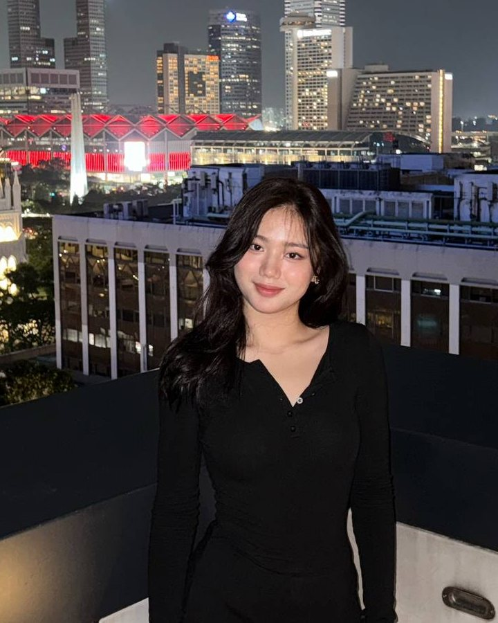

Applied AI & Analytics · Singapore Polytechnic
welcome to
my portfolio
Reading the micro-expressions of numbers.
02 / About

Hello
As a kid, I asked a lot of “why” questions. Why this much? What does this mean? I still do, just with data now.
I’m Yue Liang, Thawdar Lin Wai, a Year 2 Applied AI & Analytics student at Singapore Polytechnic. I like the messy datasets, and finding answers that aren’t written down anywhere — a bit like reading the micro-expressions of numbers. The answer is usually a number nobody thought to ask about.
Outside of that: makeup, Dashi the cat, and the discipline I kept from competitive swimming. I’m looking for a data or AI internship where the work actually gets used.

Experience
Tech head
TrustGuard AI · OCBC Ignite 2026
Shortlisted. Checks chatbot answers against bank policy.
Tech head
APEX.AI · ESG Horizon
Semi-finalist. Hiring data and green patents, read for greenwashing.
Volunteer tutor, SP Welfare Services Club, Apr–Sep 2026. Poly 50 runner. Public speaking workshop.
Education
3.87 cGPA / 4.00
Singapore Polytechnic
Diploma in Applied AI & Analytics
Apr 2025 — Apr 2028
Distinctions
Back End Development
Fundamentals of Computing
Software
Python, Java, SQL
Pandas, NumPy, scikit-learn
TensorFlow, Keras
Power BI, DAX, Tableau
MySQL, MongoDB
Node.js, Express
01 / Selected work
What the numbers said.
Twelve projects. Browse the cards, then open any row for the problem, process and proof.